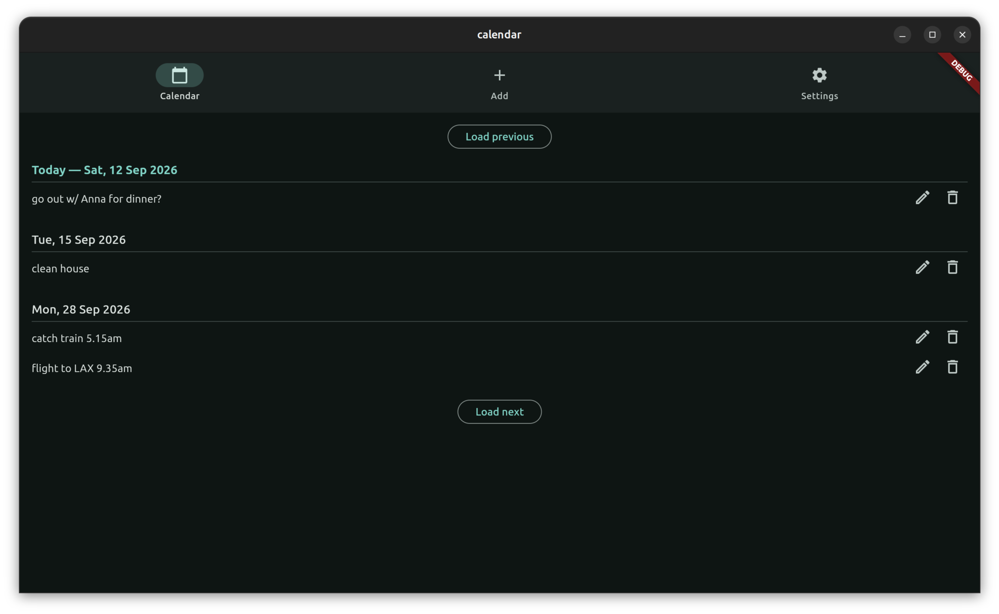

a minimalist day-based personal calendar
calendar software is often overly rigid (not to mention complex) in representing how people actually plan their days, c.f.:
Tracking the start time of meetings is far more important than tracking the end times, yet calendar programs don't differentiate between the two. In the last 30 years, I've initiated and attended thousands of meetings. The starting time of these meetings is extremely important. For most of the meetings, however, the end time is not important, not needed, not specified, and not knowable in advance.
— The Inmates Are Running the Asylum
I think especially for personal use (i.e. no invite functions, public visibility, etc), we may get away with a calendar that only tracks the day of a given event, together with a plain-text field where the user may or may not specify start time, end time, location, etc. The interface can then be very simple indeed (I prototyped this in flutter):
